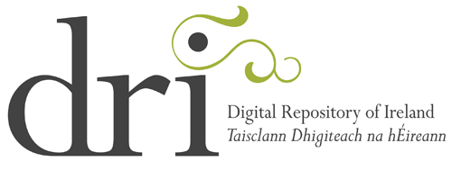

The Digital Repository of Ireland (DRI) is recruiting for two Software Engineer positions (based in National University of Ireland, Maynooth):
1. Software Engineer in the Digital Repository of Ireland - One Year Contract Post
2. Software Engineer in the Digital Repository of Ireland - Three Year Contract Post
The DRI research consortium is comprised of the Royal Irish Academy (RIA), Dublin Institute of Technology, NUI Galway, NUI Maynooth and Trinity College Dublin. It brings together leading researchers in the humanities and social sciences, library services and high-end computing, drawing on national research and graduate training programmes and structures such as the Irish Social Sciences Platform (ISSP), Humanities Serving Irish Society (HSIS), the Trinity Centre for High Performance Computing (TCHPC) and the Digital Humanities Observatory (DHO).
The DRI will build a single, unified, accessible and sustainable Trusted Digital Repository (TDR) and access repository for the humanities and qualitative social sciences in Ireland with common data and metadata standards, formats, access rights, and research tools. It will consolidate and make accessible social sciences, arts and cultural data, collections and audio-visual archives.
This is an excellent opportunity for Java/XML/Database developer to work in a stimulating, challenging research environment using the latest leading edge Java innovations and Open Source technologies. The successful software engineer must have the ability and willingness to take ownership of the project, design and progress it through to development, test and delivery.
The successful candidate will work closely with the Senior Software Engineer, Requirements Analyst, Policy Manager and Principal Investigators at National University of Ireland Maynooth.
For further information please visit:
Software Engineer in the Digital Repository of Ireland - One Year Contract Post
http://www.publicjobs.ie/publicjobs/campaignAdvert/4656.htmSoftware Engineer in the Digital Repository of Ireland - Three Year Contract Post
http://www.publicjobs.ie/publicjobs/campaignAdvert/4658.htmApplications to be made no later than Midnight (GMT) on Friday, 20th April 2012. No late applications will be accepted.